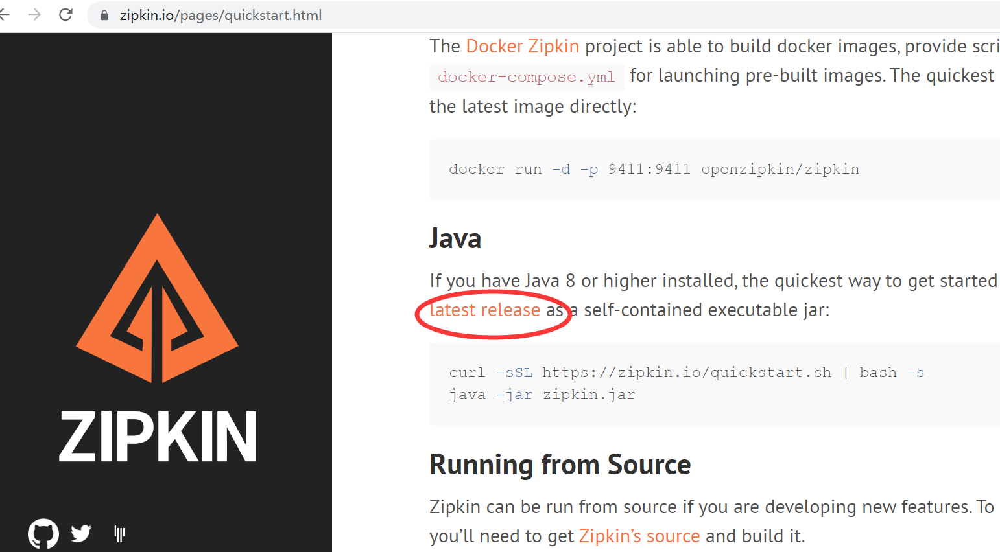

Sleuth 简介
请求追踪，问题（性能，异常）定位
一， 给服务添加链路追踪
加依赖
<dependency>
<groupId>org.springframework.cloud</groupId>
<artifactId>spring-cloud-starter-zipkin</artifactId>
</dependency>
添加配置
spring:
zipkin: # 指定zipkin服务器地址
base-url: http://localhost:9411
sleuth:
sampler: # 采样器
probability: 0.1 # 设置Sleuth抽样收集的概率
安装zipkin
主页地址： https://zipkin.io/  下载后使用如下命令启动zipkin：
java -jar zipkin-server-2.23.19-exec.jar
zipkin概念
- span-跨度-范围
- trace-追踪-痕迹
使用ES持久化存储跟踪信息
- 安装ES
- ES Header chrome 安装 /Volumes/workspace/es-head/es-head
- zipkin启动时传入使用ES的参数
# STORAGE_TYPE：表示存储类型 ES_HOSTS：表示ES的访问地址
java -jar zipkin-server-2.12.9-exec.jar --STORAGE_TYPE=elasticsearch --ES_HOSTS=localhost:9200